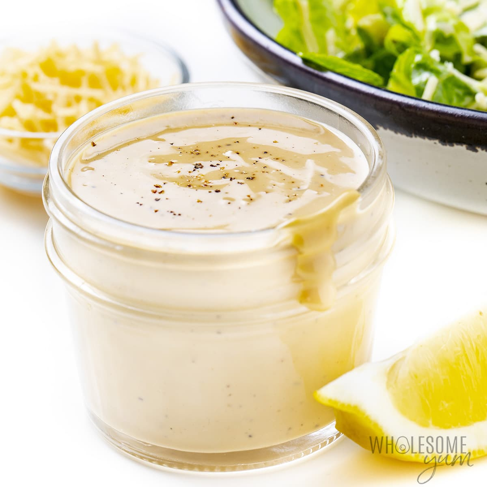

Keto Caesar Dressing

Description
What’s a Caesar salad without a killer Caesar dressing? Luckily, you don’t have to find out! This out-of-this-world dressing was created specifically for the keto diet. Plus it’s downright easy to make. Enjoy it on a classic Caesar, as a marinade for chicken, meat, or seafood, or a dip with freshly cut veggies.
Ingredients
- 240 ml (80 g) shredded Parmesan cheese
- 120 ml olive oil
- 1 tbsp Dijon mustard
- 1 tsp red wine vinegar
- ½ garlic clove, minced
- 21 (g) anchovies
- ½ lemon, the juice
- 1 pinch ground black pepper
- ½ tsp salt
Instructions
- Add the Parmesan cheese, olive oil, Dijon mustard, red wine vinegar, garlic, anchovies, lemon juice, and black pepper to a small food processor or a tall bowl to use with an immersion blender.
- Blend until smooth.
- Taste and add salt as needed.
- For a thinner consistency, dilute with water, adding about a teaspoon at a time and blend again to emulsify.
Tips
- Use it as a base for tuna or chicken salad (instead of mayo). Delish!
Nutrients
| Carbs |
Protein |
Fat |
Calories |
Fibre |
Sugar |
Sodium |
Calcium |
Sat |
GL |
| (g) |
(g) |
(g) |
(kCal) |
(g) |
(g) |
(mg) |
(mg) |
Fat (g) |
(g) |
| 2.18 |
17.11 |
42.81 |
459.67 |
0.35 |
0.68 |
1721.65 |
487.1 |
10.97 |
0.54 |
Back to top of page